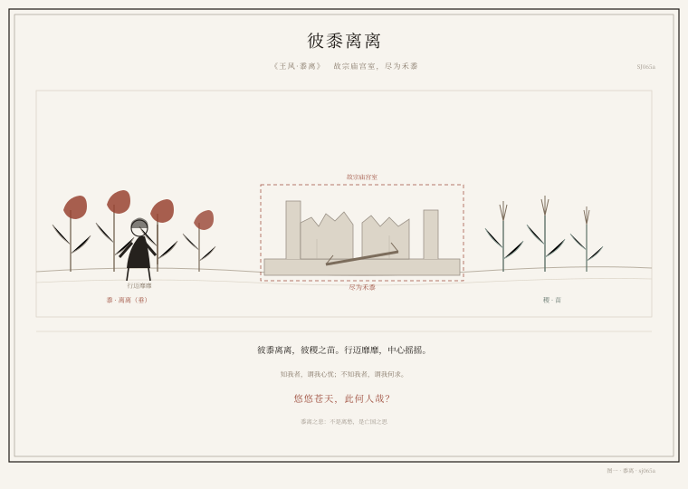
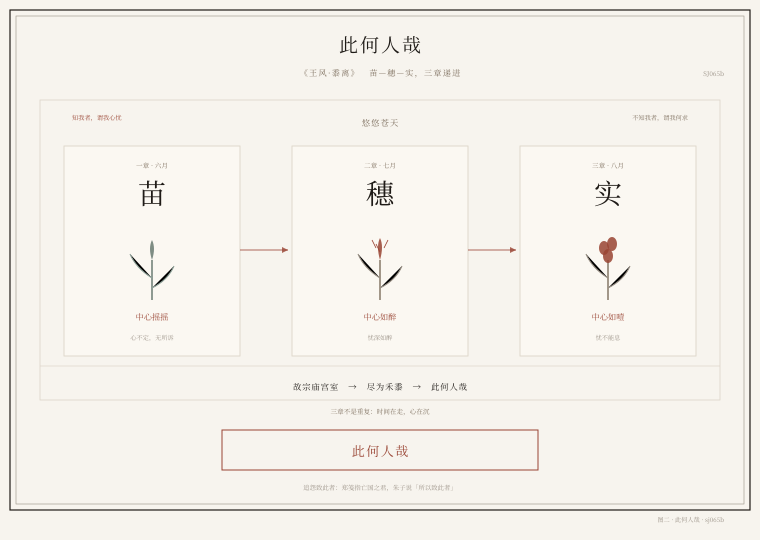

第六十五篇 黍离
王风 · 之一 SJ065
朗读 · 普通话
依经文原文朗读，章次不读出；配古琴底乐，不改速、不加拖腔。全库同一音色（豆包 TTS），非播音员录制。
一 解题
诗三判：
- 谁在说：周室的大夫。他因行役来到宗周镐京，走过旧日的宗庙宫室，看见那片地方全种上了黍稷；他徘徊不忍离去，作了这首诗。
- 说什么事：黍穗垂垂，稷从苗到穗到实；他走路迟迟，心里从摇摇到如醉到如噎。了解他的人说他心忧，不了解他的人说他求什么；他只能呼问苍天：造成这一切的，究竟是什么人？
- 为何编在此：王风第一首。西周覆灭，平王东迁，王畿之诗不能再称雅，降而为风；《黍离》以「故都成田」开王风，也定下「黍离之悲」的调子。卫风收于「好」，王风开于「悲」。
《毛序》：「《黍离》，闵宗周也。周大夫行役至于宗周，过故宗庙宫室，尽为禾黍。闵周室之颠覆，彷徨不忍去，而作是诗也。」
郑笺：「宗周，镐京也，谓之西周。周王城也，谓之东周。幽王之乱而宗周灭，平王东迁，政遂微弱，下列于诸侯，其诗不能复雅，而同于国风焉。」
朱子《诗集传》：「赋而兴也。黍，谷名，苗似芦，高丈余，穗黑色，实圆重。离离，垂貌。稷，亦谷也，一名穄，似黍而小，或曰粟也。……周既东迁，大夫行役至于宗周，过故宗庙宫室，尽为禾黍，闵周室之颠覆，徬徨不忍去，故赋其所见黍之离离与稷之苗，以兴行之靡靡、心之摇摇。既叹时人莫识己意，又伤所以致此者果何人哉，追怨之深也。」
本库的看法：《黍离》是一首「故都成田」的诗。不是怀古，是目击；不是泛叹，是追怨。
宗庙宫室尽为禾黍，大夫行役过此，不忍速去；「知我者」少，「不知我者」多；到最后，无人可问，只能问天。「黍离之悲」不是离愁，是亡国之思。
先辨三物：黍离，不是「离愁」，是黍穗下垂的样子；稷，是谷名，不是「社稷」的稷；宗周，是镐京，不是洛邑王城。
二 经文
第一章
彼黍离离，彼稷之苗。行迈靡靡，中心摇摇。知我者，谓我心忧；不知我者，谓我何求。悠悠苍天，此何人哉？
第二章
彼黍离离，彼稷之穗。行迈靡靡，中心如醉。知我者，谓我心忧；不知我者，谓我何求。悠悠苍天，此何人哉？
第三章
彼黍离离，彼稷之实。行迈靡靡，中心如噎。知我者，谓我心忧；不知我者，谓我何求。悠悠苍天，此何人哉？
分章：三章，章十句。
三 韵读
| 一 |
离/靡；苗/摇；忧/求；天/人 |
歌、宵、尤、真（天人通押） |
| 二 |
穗/醉；忧/求；天/人 |
至、尤、真 |
| 三 |
实/噎；忧/求；天/人 |
质、屑、尤、真 |
「离」古音罗，「靡」古音摩；「天」朱子叶铁因反，与「人」押；「哉」不入韵。三章共用「忧、求」与「天、人」两组；前一组随物换，后两组不变。物换，心不变；心不变，问也不变。
四 字义与名物
字义
- 黍——黍子、黄米；穗黑色，实圆重。
- 离离——垂貌；黍穗下垂的样子。古音「罗」，不是「离愁」的离。
- 稷——谷名；一名穄，似黍而小，或曰粟。不是「社稷」的稷。
- 苗——禾未秀；庄稼初生。
- 穗——禾穗；秀而出穗。
- 实——谷实；庄稼成熟。
- 行迈——行远；迈，行。
- 靡靡——迟迟；行走舒缓、不忍速去。古音「摩」，不是「靡靡之音」。
- 中心——心中。
- 摇摇——心不定；忧无所愬。
- 如醉——如醉；忧深如醉。
- 如噎——如噎；忧不能息，咽喉蔽塞。
- 知我者——了解我的人；知我之情。
- 不知我者——不了解我的人；怪我久留不去。
- 谓我何求——说我求什么；以为我有所求。
- 悠悠——远貌。
- 苍天——天；据远视之，苍苍然。
- 此何人哉——造成这一切的，是什么人？郑笺「此亡国之君，何等人哉！疾之甚」；朱子「所以致此者果何人哉，追怨之深」。
- 宗周——镐京；西周王都。
- 王城——洛邑；东周王都。
- 周大夫——周室的大夫。
- 行役——因公务出行；不是「行军」。
- 故宗庙宫室——旧日的宗庙宫室；「故」是旧。
- 禾黍——禾与黍；庄稼。
- 颠覆——倾覆、灭亡。
- 闵——怜恤、忧伤。
- 彷徨——徘徊。
- 不忍去——不忍离开。
- 平王——周平王；东迁洛邑。
- 幽王——周幽王；宗周覆灭之君。
- 王风——周东都王城畿内之诗；不能复雅，降而为风。
名物
- 黍——穗下垂，黑色；故都田野的主景。
- 稷——苗、穗、实三态；三章的时间标尺。
- 宗庙宫室——旧都的祖庙与宫室；今为禾黍。
- 禾黍——庄稼；故都成田的证据。
- 苍天——远天；大夫诉告的对象。
五 今译
第一章
那黍穗垂垂，那稷还在苗。我走路迟迟，心里摇摇不定。了解我的人，说我心忧；不了解我的人，说我求什么。悠悠苍天，这是什么人造成的啊！
第二章
那黍穗垂垂，那稷已经抽穗。我走路迟迟，心里像醉了一样。了解我的人，说我心忧；不了解我的人，说我求什么。悠悠苍天，这是什么人造成的啊！
第三章
那黍穗垂垂，那稷已经结实。我走路迟迟，心里像噎住一样。了解我的人，说我心忧；不了解我的人，说我求什么。悠悠苍天，这是什么人造成的啊！
说明：「离离」今译作「垂垂」，取「垂貌」；「靡靡」今译作「迟迟」；「此何人哉」今译作「这是什么人造成的」，取「致此者」一义，不译作泛泛的「这是谁」。
六 章旨
一章：苗—摇摇。
黍已垂穗，稷尚是苗；大夫初到故都，看见宗庙宫室尽成田地。他走得慢，心里摇摇无所诉。知我者说我心忧，不知我者怪我久留，说我何求。最后呼天：这是什么人造成的？
二章：穗—如醉。
稷已抽穗，时间从六月走到七月；心也从摇摇变成如醉。醉不是喝酒，是忧深如醉。物长一分，忧深一分。
三章：实—如噎。
稷已结实，时间走到八月；心从如醉变成如噎。噎不是噎住，是忧不能息。谷已成熟，人仍未归；故都仍是田地，问仍无人答。
三章合看：苗、穗、实，是时间；摇摇、如醉、如噎，是心。
三章不是重复，是三次经过、三次看见、三次问天。「知我者」少，「不知我者」多；亡国之痛，最难与人共享。「悠悠苍天」，是无人可问，只能问天。「此何人哉」，郑笺说是「亡国之君」，朱子说是「所以致此者」，都是追怨致此者，不是泛问「这是谁」。
七 诗教
- 赋而兴：朱子标「赋而兴也」。黍稷是眼前实景，是赋；由黍稷之垂、稷苗之长，兴行之靡靡、心之摇摇，是兴。赋其所见，兴其所感。
- 观：观「故都成田」——宗庙宫室尽为禾黍；观「黍离」如何成为亡国符号；观「知我者／不知我者」的分裂——亡国之痛不被理解；观「苗—穗—实」的时间——不是一次怀古，是三次目击。
- 群：可与亡国之人同群，与离乡之人同群，与看见故园荒废而说不出话的人同群。「知我者」少，诗正是为「知我者」而作。
- 怨：此诗有怨，怨在「此何人哉」。但所怨不是平王；孔疏说「宗周丧灭，非平王之咎，故不刺平王」。诗作于平王时，志恨幽王之败；怨的是致此者，不是眼前的天子。
八 分寸与边界
- 不可把「黍离」读成「离愁」。黍离是黍穗下垂的样子；「离」古音罗，不是「离别」的离。
- 不可把「稷」只当「社稷」。这里是谷名，一名穄，似黍而小，或曰粟。
- 不可把「宗周」当洛邑。宗周是镐京，西周王都；洛邑是王城，东周王都。
- 不可把「行役」当「行军」。行役是因公务出行，不必是打仗。
- 不可把「靡靡」当「靡靡之音」。靡靡是迟迟、行缓；不是淫靡。
- 不可把「摇摇」当「摇动」。摇摇是心不定、忧无所愬。
- 不可把「如醉」当喝醉。如醉是忧深如醉。
- 不可把「如噎」当噎住。如噎是忧不能息，咽喉蔽塞。
- 不可把「此何人哉」当泛泛的「这是谁」。它是追怨致此者：郑笺指「亡国之君」，朱子说「所以致此者」。
- 不可把「黍离之悲」当离愁。黍离之悲是亡国之思、故都之痛。
- 不可把此诗读成「刺平王」。诗作于平王时，但孔疏明说「非平王之咎，故不刺平王」；所恨是幽王之败。
九 存疑
- 诗旨：毛序「闵宗周」，朱子同；现代有怀古、亡国、故都之思等读。本库从序，取「目击故都成田，追怨致此者」。
- 「此何人哉」指谁：郑笺「此亡国之君，何等人哉！疾之甚」，孔疏指幽王；朱子说「所以致此者果何人哉」，不指名。本库取「致此者」，不把「何人」缩成一人。
- 作者：周大夫；但孔疏说「未必即在宗周而作」，是追叙行役所见。是否即作于宗周，无确证。
- 时代：诗作于平王时，志恨幽王之败；具体年代无确证。
- 三章时间：孔疏以苗为六月、穗为七月、实为八月；诗未必严格对应，但「苗—穗—实」的时间推移可信。
- 「离离」：毛、朱皆训「垂貌」；诗本音「离」音罗。今读
lí，古音罗；读法不同，义都是「垂」。
- 「苗、穗、实」：是实指时间，还是复沓换字？本库取时间推移，不废复沓。
- 「宗周」：此诗从郑笺，指镐京；《祭统》「即宫于宗周」又谓洛邑，是另一语境，不可混。
- 「天、人」押韵：朱子「天叶铁因反」，与「人」押；「哉」不入韵。诗本音同。
十 跨典
- 《王风·君子于役》：下一篇，也写行役；《黍离》是大夫行役见故都，《君子于役》是妇人望行役者。一见国破，一望家书。
- 《小雅·正月》：「赫赫宗周，褒姒灭之。」《黍离》不点名，只写禾黍；一为直斥，一为目击。
- 《小雅·小弁》：「踧踧周道，鞫为茂草。」故都荒废，同一母题；《黍离》更静、更痛。
- 《史记·宋世家》：箕子过殷故墟，作《麦秀》之诗；「麦秀黍离」并称，都是亡国故墟之悲。
- 《王风·扬之水》：平王戍申，周人怨思；《黍离》不刺平王，而写宗周之亡。
- 《左传》《国语》：幽王宠褒姒、废申后、犬戎攻周、平王东迁；毛序所谓「宗周之颠覆」，即此。
十一 双卡与图
双卡十对：
| 黍离（黍穗下垂） |
黍离（离愁，误） |
| 稷（谷名，穄／粟） |
稷（社稷，误） |
| 宗周（镐京） |
宗周（洛邑，误） |
| 行役（因公务出行） |
行役（行军，误） |
| 靡靡（迟迟、行缓） |
靡靡（靡靡之音，误） |
| 摇摇（心不定） |
摇摇（摇动，误） |
| 如醉（忧深如醉） |
如醉（喝醉，误） |
| 如噎（忧不能息） |
如噎（噎住，误） |
| 此何人哉（致此者何人） |
此何人哉（泛问是谁，误） |
| 黍离之悲（亡国之思） |
黍离之悲（离愁，误） |

图一 · 彼黍离离，彼稷之苗 故都成田图

图二 · 苗—穗—实，此何人哉 义理图
读图三处：
- 黍离：图一，黍穗下垂，长在旧宗庙宫室的地基上；不是离愁，是故都成田。
- 行迈：图一，大夫走在田埂上，脚步迟迟；不忍去，所以慢。
- 此何人哉：图二，三章从苗到实，问从「摇摇」到「如噎」；最后收在「此何人哉」，追怨致此者。